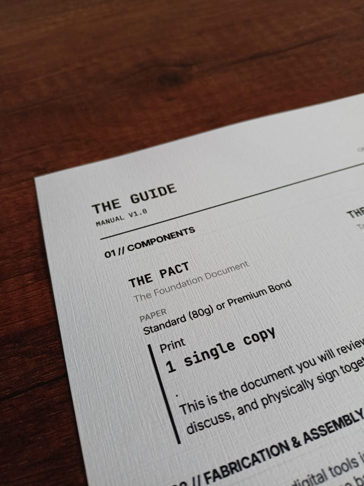
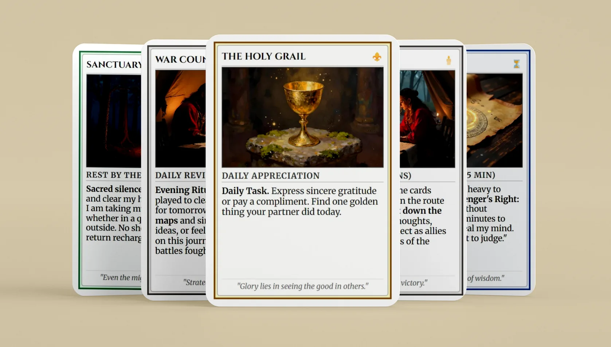
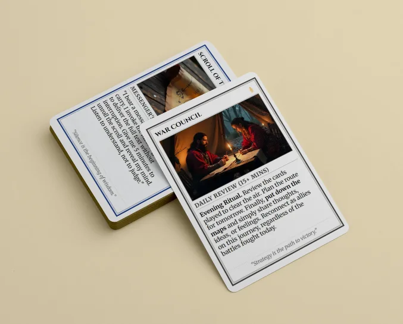
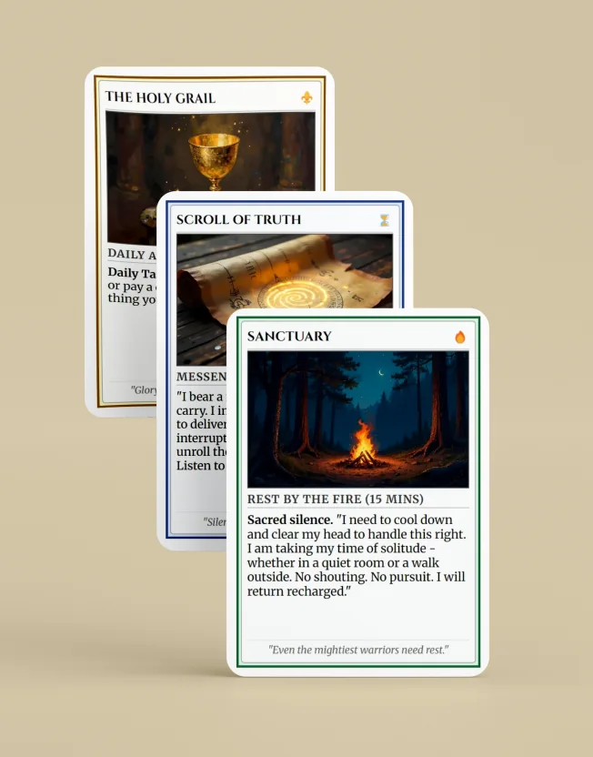
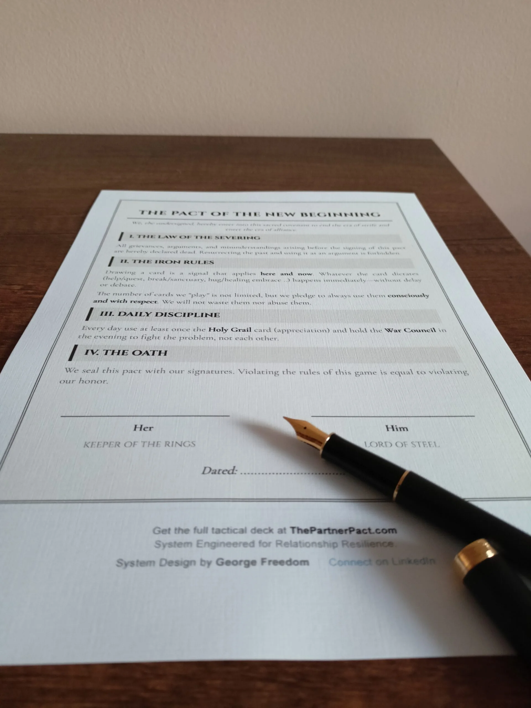
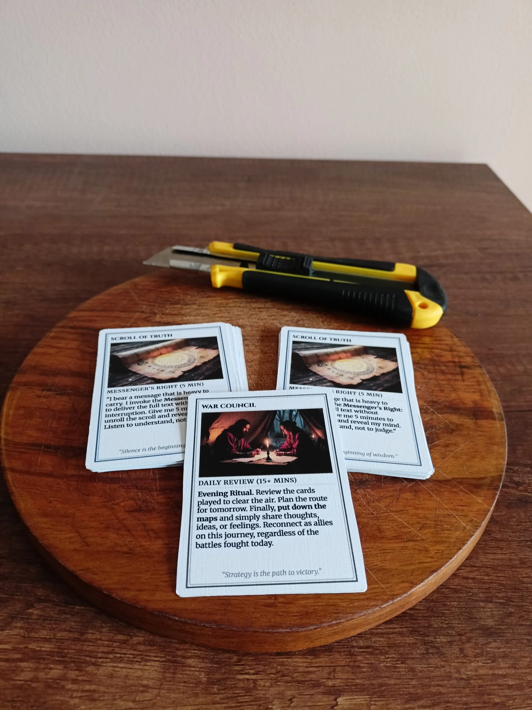
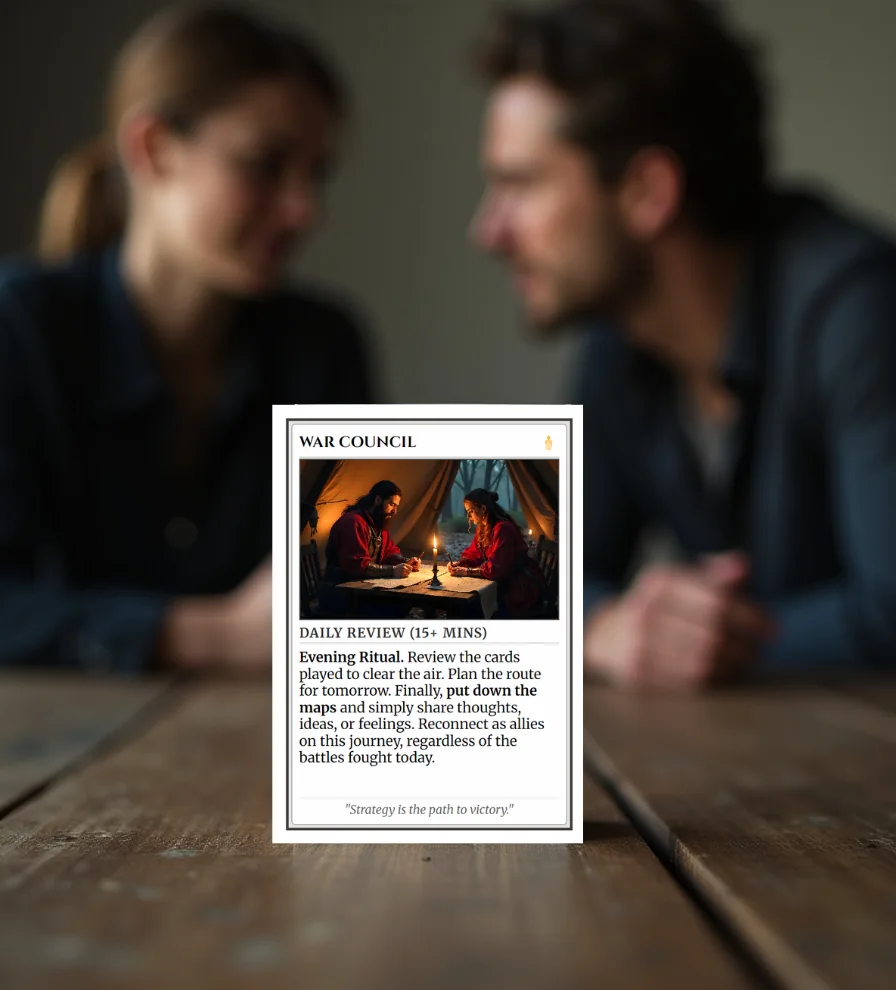
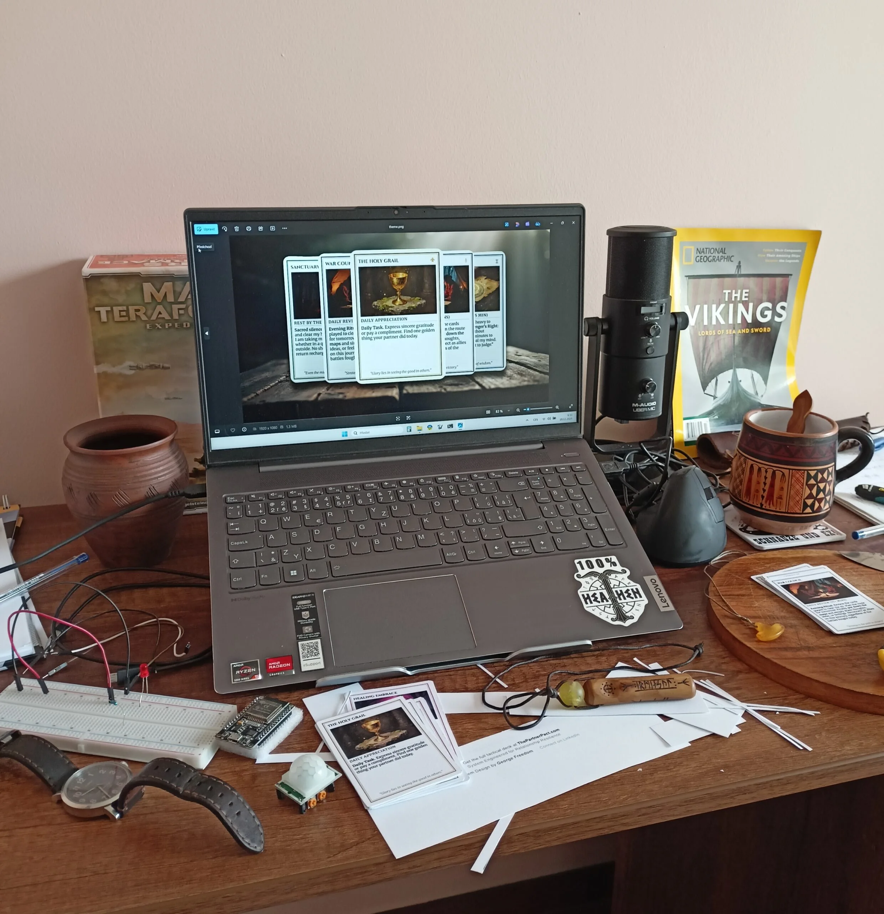

La Guía
Formato: PDF (A4 & Carta)
Contenido: Planos de ensamblaje y instrucciones de uso.
Llevas herramientas para los obstáculos físicos. ¿Qué llevas para los emocionales? The Partner Pact es un mazo de comunicación táctica diseñado para cortar el ruido, despejar la niebla de guerra y resolver conflictos antes de que empiecen.
Sin terapia. Sin relleno. Solo equipo esencial.
Las ediciones impresas estarán disponibles en: Inglés · Español · Checo


01 · La Niebla De Guerra
Son un equipo. Se aman. Sin embargo, se encuentran atrapados en bucles de malentendidos. Tú dices: «Necesito espacio para pensar». Ella escucha: «Te estoy rechazando».
Las suposiciones se acumulan. La «Niebla de Guerra» se asienta. De repente, no están resolviendo el problema: están luchando entre ustedes.
No es falta de amor. Es falta de la interfaz correcta. No necesitas cambiar quién eres. Solo necesitas mejores herramientas para traducir tus necesidades en señales claras.

02 · El Protocolo
KAbordé este problema igual que abordo la supervivencia o la programación: Eliminar lo innecesario. Centrarse en la función. Construir lo que perdura.
Piensa en The Partner Pact como tu EDC Relacional (Everyday Carry / Equipo de Diario). Convierte sentimientos invisibles y complejos en objetos visibles y tangibles.
03 · El Equipamiento

Formato: PDF (A4 & Carta)
Contenido: Planos de ensamblaje y instrucciones de uso.

Formato: PDF de Alta Resolución
Contenido: Contrato de relación imprimible pa 2 firmas.

Formato: Hojas imprimibles (Frente y Dorso)
Contenido: 10 Cartas Tácticas (2 Sets).
Uso

Primero, descarga La Guía. Contiene los planos y las instrucciones de ensamblaje. Síguelos para imprimir y cortar dos sets completos de El Mazo: un set de equipamiento para ti y otro para tu pareja.
Siéntense juntos y lean El Pacto. Fírmenlo para cambiar oficialmente su dinámica de «oponentes» a «aliados». Este ritual confirma que ahora enfrentan los desafíos juntos, no el uno contra el otro.
Comienza la acción. No pienses demasiado las palabras ni adivines sentimientos: simplemente juega una carta de tu mazo. Ya sea que necesites una pausa, un abrazo o apoyo, la carta señala tus necesidades al instante sin drama.
Disponibilidad actual
Actualmente estoy aceptando reservas anticipadas de las ediciones físicas de Partner Pact para el año 2027. Las ediciones impresas estarán disponibles en inglés, español y checo.
Si te interesa, puedes contactarme por correo electrónico. Te pediré que especifiques el idioma de la edición, la cantidad de unidades y el país de destino para el envío.
Una reserva anticipada por correo electrónico es una "expresión de interés", no una confirmación del pedido ni un compromiso comercial. Revisaré los mensajes recibidos y, posteriormente, confirmaré la disponibilidad, el precio y los detalles del envío.

Creado a partir de la experiencia
Pienso, planifico y creo. Me gustan los juegos de mesa estratégicos, la historia, la ciencia ficción y la fantasía, así como los principios de supervivencia, donde la preparación, la experiencia y contar con buenos aliados pueden marcar la diferencia. Disfruto resolviendo problemas, eliminando lo innecesario, centrándome en lo esencial y convirtiendo ideas en sistemas prácticos y funcionales.
The Partner Pact nació de un problema que encontré en mi propio matrimonio. No necesitábamos que un terapeuta nos preguntara «cómo nos hacía sentir aquello». Necesitábamos claridad. Necesitábamos un sistema mejor. Combiné la lógica y el diseño, mi pasión por los juegos de mesa y una mentalidad táctica para crear algo tangible, algo que pudiéramos tener en nuestras propias manos. Inspirándome en antiguos códigos de honor y en la estética táctica moderna, creé The Partner Pact: una baraja de cartas que convierte los conflictos cotidianos en misiones y aventuras que ambos disfrutamos.
Primero probé y puse a prueba la idea en casa. Después, aprovechando mi experiencia en desarrollo web, programación e inteligencia artificial, y aplicando una filosofía de «menos teoría, más acción», la convertí en algo que también pueden utilizar otras personas.
El resultado es atractivo a la vista, fácil de usar y, sobre todo, ¡divertido de jugar! :)